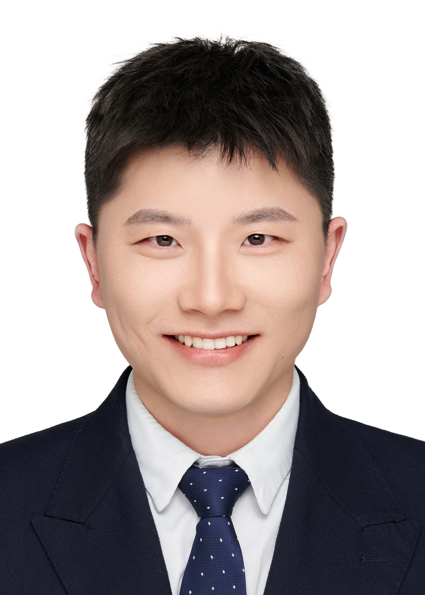

|  |
|
About Me
I'm currently a last-year Ph.D. student in City University of Hong Kong (CityUHK) and supervised by Prof. Yixuan Yuan, CUHK.
Before this, I received the Master's degree from Shenzhen University (SZU).
My research interests include Large Models, Computer Vision, Medical Image Analysis and Federated Learning.
I would welcome the opportunity to explore potential research collaborations. Please feel free to reach out if any aspects of my work align with your current research interests.
On the academic job market for postdoctoral and faculty positions in AI and healthcare.
News
- [2025-07] I pass the Ph.D. oral defense!
- [2025-02] One paper is accepted by MedIA.
- [2025-01] One paper is accepted by JBHI.
- [2024-12] One paper is accepted by Journal of Dentistry. One paper is accepted by TMI.
- [2024-10] One paper is submitted to MedIA.
- [2024-10] One paper is accepted by T-ASE.
- [2024-09] Obtained Outstanding Academic Performance Award for Research Degree Students of CityU.
- [2024-09] Awarded 2024-2025 Institutional Research Tuition Scholarship of CityU.
- [2024-08] One paper is accepted by IEEE BIBM 2024.
- [2024-06] One paper is submitted to TMI. One paper is submitted to COMPAG.
- [2024-05] One paper is accepted by MICCAI 2024 (Early Accept).
- [2024-01] One paper is accepted by TMI.
- [2023-10] One paper is selected as Outstanding Papers by JOIG.
- [2023-10] One paper is accepted by MedIA.
- [2023-09] One paper accepted by COMPAG.
- [2023-09] Awarded 2023-2024 Institutional Research Tuition Scholarship of CityU.
- [2023-07] One paper is accepted by ICCV 2023.
- [2023-07] One paper is accepted by TMI.
- [2023-06] One paper is accepted by T-ASE.
- [2023-01] One paper is accepted by TMI.
Publications
@ Journal Papers (# indicates equal contribution)- [MedIA]
FedBM: Stealing Knowledge from Pre-trained Language Models for Heterogeneous Federated Learning
Meilu Zhu, Qiushi Yang, Zhifan Gao, Yixuan Yuan*, Jun Liu*
Medical Image Analysis (MedIA), 2025. (IF: 12.41)
- [TMI]
DEeR: Deviation Eliminating and Noise Regulating for Privacy-preserving Federated Low-rank Adaptation
Meilu Zhu, Axiu Mao, Jun Liu*, Yixuan Yuan*
IEEE Transactions on Medical Imaging (TMI), 2024. (IF: 11.56)
- [MedIA]
Comprehensive Learning and Adaptive Teaching: Distilling Multi-Modal Knowledge for Pathological Glioma Grading
Xiaohan Xing#, Meilu Zhu#, Zhen Chen, Yixuan Yuan*
Medical Image Analysis (MedIA), 2023. (IF: 12.41)
- [TMI]
FedOSS: Federated Open Set Recognition via Inter-client Discrepancy and Collaboration
Meilu Zhu, Jing Liao, Jun Liu*, Yixuan Yuan*
IEEE Transactions on Medical Imaging (TMI), 2023. (IF: 11.56)
- [TMI]
FedDM: Federated Weakly Supervised Segmentation via Annotation Calibration and Gradient De-conflicting
Meilu Zhu, Zhen Chen, Yixuan Yuan*
IEEE Transactions on Medical Imaging (TMI), 2023. (IF: 11.56)
- [TMI]
DSI-Net: Deep Synergistic Interaction Network for Joint Classification and Segmentation with Endoscope Images
Meilu Zhu, Zhen Chen, Yixuan Yuan*
IEEE Transactions on Medical Imaging (TMI), 2021. (IF: 11.56)
- [NN]
Branched Convolutional Neural Networks Incorporated with Jacobian Deep Regression for Facial Landmark Detection
Meilu Zhu, Daming Shi*, Junbin Gao
Neural Networks, Apri, 2019. (IF: 8.67)
- [Journal of Dentistry]
A Novel Al Model for Detecting Periapical Lesion on CBCT: CBCT-SAM
Ka-Kei Chau#, Meilu Zhu#, Abeer AlHadidi, Cheng Wang, Kuofeng Hung, Ling Ji, Pierre Wohlgemuth, Walter Yu Hang Lam, Yixuan Yuan*, Hui Chen*
Journal of Dentistry, 2024.
- [COMPAG]
Toward Optimal Sampling Rate Selection and Unbiased Classification for Precise Animal Activity Recognition
Axiu Mao, Meilu Zhu*, Lei Shen, Xiaoshuai Wang, Tomas Norton, Kai Liu*
Computers and Electronics in Agriculture (COMPAG), under review, 2025. (IF: 8.30)
- [COMPAG]
CKSP: Cross-species Knowledge Sharing and Preserving for Universal Animal Activity Recognition
Axiu Mao, Meilu Zhu*, Zhaojin Guo, Zheng He, Tomas Norton, Kai Liu
Computers and Electronics in Agriculture (COMPAG), under review, 2024. (IF: 8.30)
- [COMPAG]
A Teacher-to-Student Information Recovery Method Toward Energy-Efficient Animal Activity Recognition at Low Sampling Rates
Axiu Mao, Meilu Zhu, Endai Huang, Xi Yao, Kai Liu*
Computers and Electronics in Agriculture (COMPAG), 2023. (IF: 8.30)
- [T-ASE]
CMCNet: Colorization-Aware Mix-Uncertainty-Adaptive Consistency Network for Semi-Supervised Fruit Counting
Xiaochun Mai, Meilu Zhu, Yixuan Yuan*
IEEE Transactions on Automation Science and Engineering (T-ASE), 2023. (IF: 6.636)
- [T-ASE]
ParetoSSL: Pareto Semi-Supervised Learning with Bias-aware Gradient Preferences for Fruit Yield Estimation
Xiaochun Mai, Meilu Zhu, Yixuan Yuan*
IEEE Transactions on Automation Science and Engineering (T-ASE), 2024. (IF: 6.636)
- [JBHI]
Progressive Distillation with Optimal Transport for Federated Incomplete Multi-Modal Learning of Brain Tumor Segmentation
Qiushi Yang, Meilu Zhu, Peter Y. M. Woo, Leanne Lai-Hang Chan, Yixuan Yuan*
IEEE Journal of Biomedical and Health Informatics (JBHI), 2025. (IF: 8.33)
- [TMI]
Personalized Retrogress-Resilient Federated Learning Towards Imbalanced Medical Data
Zhen Chen, Chen Yang, Meilu Zhu, Zhe Peng, Yixuan Yuan*
IEEE Transactions on Medical Imaging (TMI), 2022. (IF: 11.56)
- [MedIA]
Instance Importance-Aware Graph Convolutional Network for 3D Medical Diagnosis
Zhen Chen, Jie Liu, Meilu Zhu, Peter Y. M. Woo, Yixuan Yuan*
Medical Image Analysis (MedIA), 2022. (IF: 12.41)
- [JBHI]
Mutual-Prototype Adaptation for Cross-Domain Polyp Segmentation
Chen Yang, Xiaoqing Guo, Meilu Zhu, Bulat Ibragimov, Yixuan Yuan*
IEEE Journal of Biomedical and Health Informatics (JBHI), Apri, 2021. (IF: 8.33)
- [TMI]
MGIML: Cancer Grading with Incomplete Radiology-Pathology Data via Memory Learning and Gradient Homogenization
Pengyu Wang, Huaqi Zhuang, Meilu Zhu, Xi Jiang, Jing Qin, Yixuan Yuan*
IEEE Transactions on Medical Imaging (TMI), 2024. (IF: 11.56)
- [JOIG ]
A 20-year Retrospect and Prospect of Medical Imaging Artificial Intelligence in China
Xi Jiang, Yixuan Yuan, Yaping Wang, Zhenxiang Xiao, Meilu Zhu, Zehua Chen, Tianming Liu, Dinggang Shen
Journal of Image and Graphics, Mar, 2022. (Outstanding Papers of 2022 [link] )
- [MICCAI'24]
Stealing Knowledge from Pre-trained Language Models for Federated Classifier Debiasing
Meilu Zhu, Qiushi Yang, Zhifan Gao, Jun Liu*, Yixuan Yuan* [Early Accept]
The International Conference on Medical Image Computing and Computer Assisted Intervention (MICCAI 2024), 2024
- [MICCAI'21]
Personalized Retrogress-Resilient Framework for Real-World Medical Federated Learning
Zhen Chen#, Meilu Zhu#, Chen Yang#, Yixuan Yuan* [Early Accept][Student Travel Award]
The International Conference on Medical Image Computing and Computer Assisted Intervention (MICCAI 2021), 2021
- [CVPR'19]
Robust Facial Landmark Detection via Occlusion-adaptive Deep Networks
Meilu Zhu, Daming Shi*, Mingjie Zheng, Muhammad Sadiq
IEEE Computer Vision and Pattern Recognition (CVPR), 2019
- [ICME'19]
Deep Geometry Embedding Networks for Robust Facial Landmark Detection
Meilu Zhu, Daming Shi*
IEEE International Conference on Multimedia & Expo (ICME), 2019
- [PCM'18]
Branched Convolutional Neural Networks for Face Alignment
Meilu Zhu, Daming Shi*, Songkui Chen, Junbin Gao
Pacific-Rim Conference on Multimedia (PCM), 2018, pp.291-302
- [BIBM'24]
Enhancing Clinical Information for Zero-Shot Medical Diagnosis by Prompting Large Language Model
Qiushi Yang, Meilu Zhu, Yixuan Yuan*
IEEE International Conference on Bioinformatics and Biomedicine (IEEE BIBM 2024), 2024
- [ICCV'23]
FedPD: Federated Open Set Recognition with Parameter Disentanglement
Chen Yang, Meilu Zhu, Yifan Liu, Yixuan Yuan*
International Conference on Computer Vision (ICCV), 2023
- [MICCAI'22]
Discrepancy and Gradient-guided Multi-modal Knowledge Distillation for Pathological Glioma Grading
Xiaohan Xing, Zhen Chen, Meilu Zhu, Yuenan Hou, Zhifan Gao, Yixuan Yuan* [Early Accept] [Young Scientist Award]
The International Conference on Medical Image Computing and Computer Assisted Intervention (MICCAI 2022), 2022
- [ICMLC'17]
An Advanced Level Set Method based on Bregman Divergence for Inhomogeneous Image Segmentation
Daming Shi*, Meilu Zhu
International Conference on Machine Learning and Cybernetics (ICMLC), 2017,pp.334-339.
-
A Task Interaction Network for Prostate Cancer Classification and Segmentation
Yixuan Yuan, Meilu Zhu, 2024, U.S. Patent 11,961,618.
-
Facial Landmark Detection Method, Device, Equipment and Medium based on Cascade Regression
Meilu Zhu, Daming Shi, 2022, C.N. CN113283453B.
Professional Experience
-
Apr. 2025 - Jun. 2025, Faculty of Dentistry, The University of Hong Kong
Research Assistant
Advisor: Prof. Hui Chen
-
Mar. 2025, Institute of Medical Technology, Peking University Health Science Center
Research Intern
Advisor: Prof. Hongbin Han
-
May. 2020 - Feb. 2022, Artificial Intelligence in Medicine (AIM Group), City University of Hong Kong
Research Assistant
Advisor: Prof. Yixuan Yuan
-
Aug. 2019 - May. 2020, intelligent System & networkING (iSING Lab), Hong Kong University of Science & Technology
Research Assistant
Advisor: Prof. Kai Chen
Selected Awards
- [2024] Outstanding Academic Performance Award for Research Degree Students, CityUHK
- [2024] Institutional Research Tuition Scholarship, CityUHK
- [2023] Institutional Research Tuition Scholarship, CityUHK
- [2023] Outstanding Paper Award of 2022, Journal of Image and Graphics
- [2022] Young Scientist Award (3rd author), MICCAI
- [2021] Student Travel Award, MICCAI
- [2019] Outstanding Postgraduate of Guangdong Province, SZU
- [2019] Excellent Postgraduate Graduate, SZU
Service
@ Journal Reviewer- IEEE Transactions on Neural Networks and Learning Systems (TNNLS)
- IEEE Transactions on Medical Imaging (TMI)
- Medical Image Analysis (MedIA)
- Pattern Recognition
- Neural Networks
- Expert Systems with Applications
- IEEE Transactions on Information Forensics and Security (T-IFS)
- Journal of Biomedical and Health Informatics (JBHI)
- IEEE/CVF Conference on Computer Vision and Pattern Recognition (CVPR) (2023, 2024, 2025)
- International Conference on Medical Image Computing and Computer Assisted Intervention (MICCAI) (2023, 2024, 2025)
- The European Conference on Computer Vision (ECCV) (2024)
Teaching
- MNE2066 Engineers in Society, CityUHK (Teaching Assistant, 2022/23 Semester B, 2023/24 Semester A)
- MNE3118 Mechanics of Materials, CityUHK (Teaching Assistant, 2024/25 Semester A)
- MNE3058 Embedded Control Systems, CityUHK (Teaching Assistant, 2023/24 Semester B, 2024/25 Semester B)